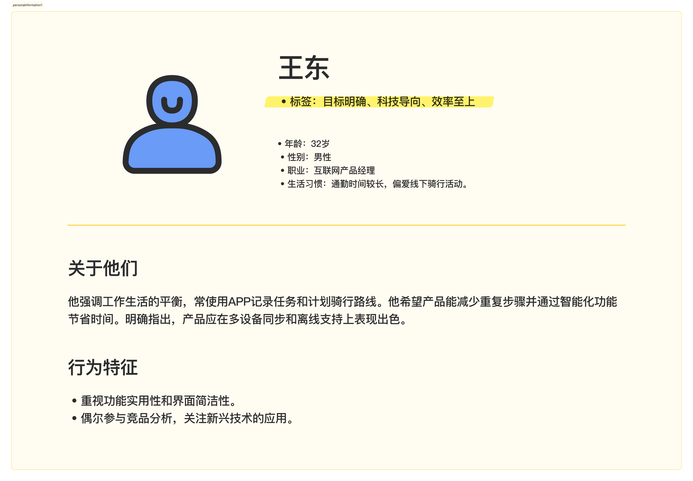

Star Pedaling
APP Design
学习谷歌UX/UI课程设计作品，其中结合了ChatGPT使用页面结构分析，用户调研，功能分析等。
时间线
2023.011.21--2024.04.01
角色
UX/UI设计 和 用户研究
工具
Figma，PS，ChatGPT
背景
在学习 Google 的 UX 课程时，我设计了一款应用作为作业。我是一名业余骑行爱好者，曾使用过多款骑行应用，因此在设计此类应用时有一定经验，并能找到合适的访谈对象。基于这些优势，我设计了 Start Pedaling，通过研究和实际反馈优化用户体验。
研究
在AI快速发展的背景下，我思考了如何利用AI工具赋能我的工作内容，并以用户体验五要素模型作为研究框架：战略层（用户需求、项目目标）、范围层（功能和内容）、结构层（信息架构）、框架层（界面与低保真原型）、表现层（视觉设计）。
同理心地图
通过与骑行爱好者的多次交流，我记录了同理心地图。
用户画像
在经过几次交流后，输出了相关用户画像。

功能分析
将收集到的信息输入ChatGPT，通过前置信息限定，基于用户痛点生成了应用功能列表。
竞品分析
之后我调研了部分骑行app软件，筛选出评分较高的几款，通过ChatGPT中进行分析，并得到以下结果。
框架结构
再次输入相关信息，得出大概框架内容，并进行优化。
推导出结构
根据ChatGPT框架结构输出页面大致结构。
提高留存率研究
针对骑行app如何提高用户留存率问题进行了研究，在访谈过程中，喜欢骑行的人都有较高的冒险精神，因此以冒险为核心点，通过ChatGPT拓展一下设计思维。并得到以下结果。
线框图
基于我上面收集到的信息，进行了优化删减并形成草图方案。
视觉设计
我使用的是环法自行车比赛，总积分领先选手黄色领骑衫黄色为主色。使产品形象更符合用户心智，提高产品识别率，记忆率。
高保真
部分高保真页面
设计反思
在科技迅猛发展的今天，作为设计师，我们需要不断更新自己的设计思维，紧跟技术潮流。从新兴的软件工具、硬件技术到材料革新，这些都可能为设计提供新的可能性。AI的崛起正在重新定义设计行业的产品产出方式，未来可能会出现集设计、开发于一体的超强个体。
UX设计的核心始终围绕人展开，它不仅是一门技术，更是一门探索人性与行为的艺术。设计师的价值在于对用户心理活动的深刻洞察，以及对创造美好体验的执着与好奇心。通过持续学习和进步，我们能更好地拥抱技术变革，赋能设计，为用户创造更具价值的体验。
查看其他项目